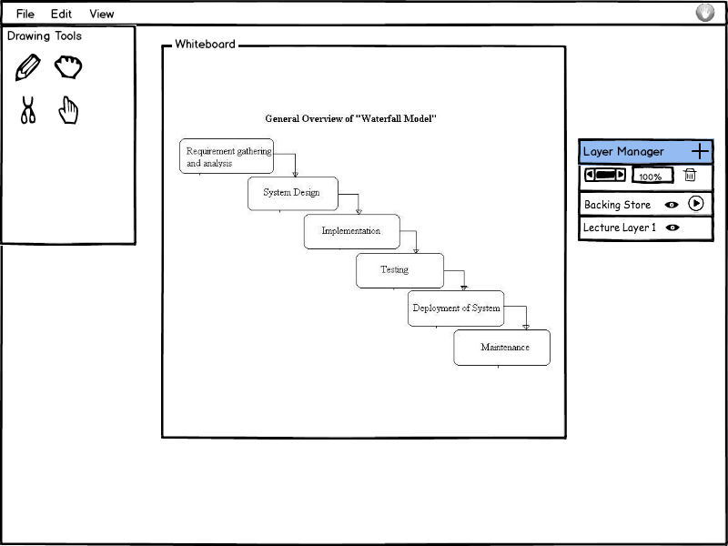
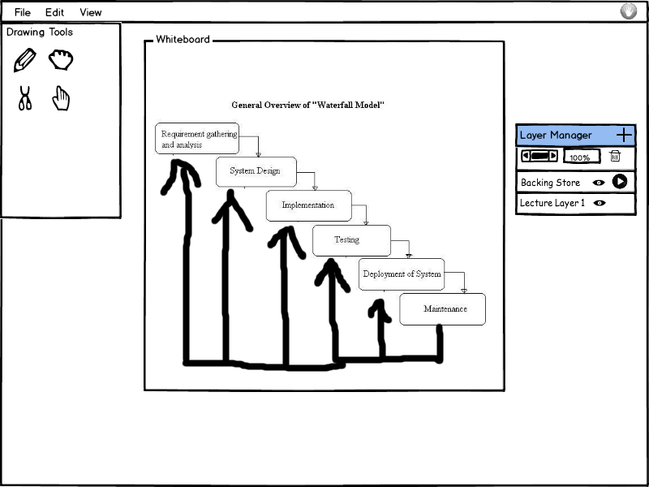
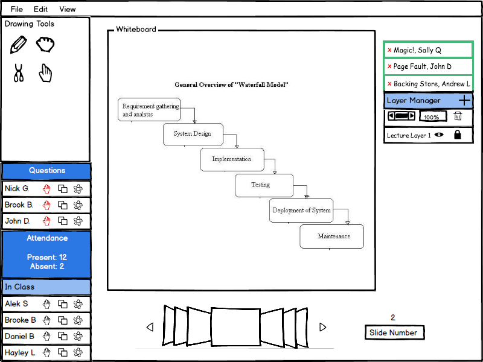
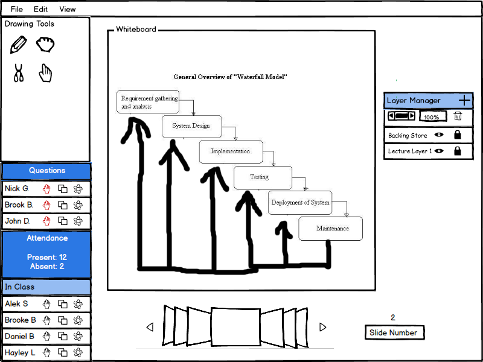
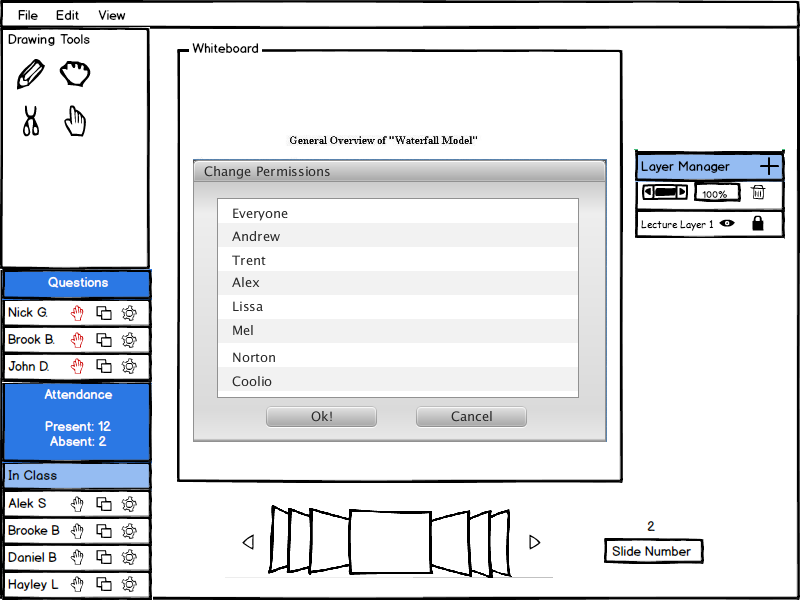
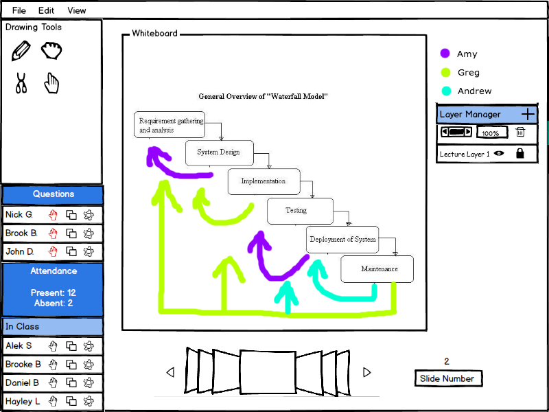

When a student wants to send a layer, they first create one using the method discussed in the layer manager. Once the student has done this, they have the ability to add text and draw things on this layer. If they want to send it to the instructor to show the class something or visually answer a question, the student clicks the arrow icon next to the layer.
Figure 1a shows the student creating a response layer and Figure 1b shows the filled in layer and that the layer has been sent.
 
Figure 1a: Student Creating a layers and Figure 1b: Student Sending a Layer
The presenter can see layers that students have sent to them above the layer manager. Green boxes with the name of the layer and who created it stack on top of the layer manager. This section becomes scrollable as more come in. The presenter can preview the layers by hovering over the green boxes, delete them by clicking the 'x' next to each name, or accept one by double clicking it. Once the presenter double clicks an incoming layer it is added as the top layer on the current slide.
Figure 2 shows the presenter receiving layers and adding one to the top.
 
Figure 2: Presenter Layer Adding
The presenter can set the permissions on a layer by clicking the lock icon next to the layer. They select which students they want to be able to draw on that layer and click 'Ok!'. The EClass then assigns a different color to each student who has permission so that viewers can distinguish between each student's work.
Figure 3 shows the presenter giving permssions to a few students to draw on a layer and then the result of their work.
 
Figure 3: Free for all draw mode